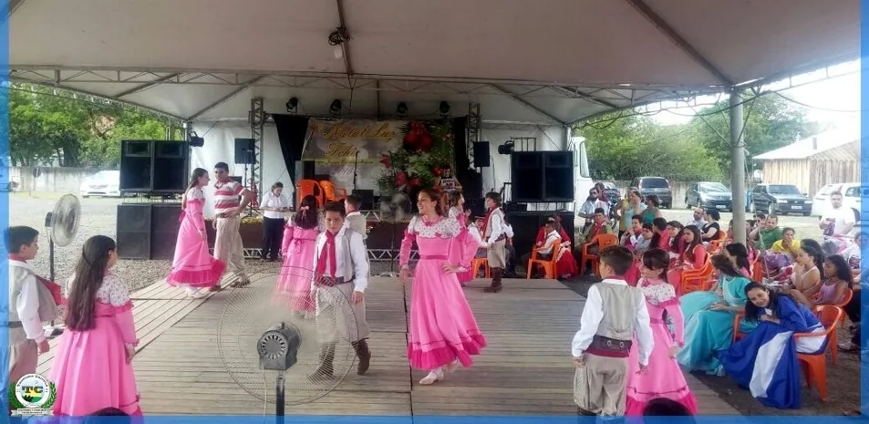
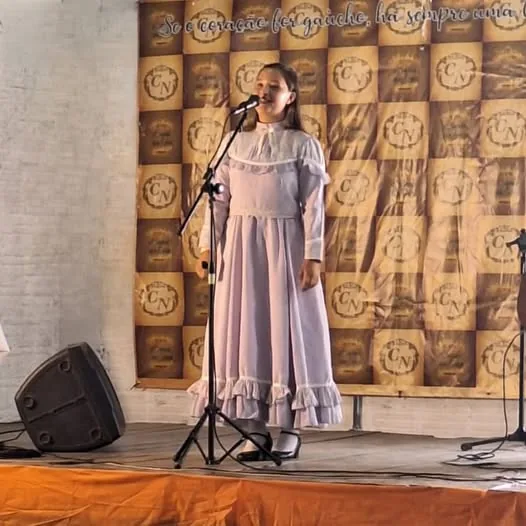

Nossos Departamentos
Depto. Artístico
Dança, declamação e música: a arte gaúcha no palco.
Invernadas Artísticas
Quatro invernadas, uma só família
As Invernadas Artísticas reúnem cerca de 60 dançarinos em quatro grupos por faixa etária: Pré-Mirim, Mirim, Juvenil e Adulta, com ensaios semanais de fevereiro a dezembro no Salão da Igreja Luterana de Sapucaia do Sul.
As invernadas se apresentam em eventos comunitários, rodeios, na Semana Farroupilha e em competições. A Invernada de Danças teve apoio do projeto Da Trempe ao Bailado (Edital SEDAC nº 22/2025).
Frentes
Arte em todas as idades
Invernada de Declamação
Cerca de 10 declamadores em encontros de estudo e ensaio. Participações no Chama’s da Poesia e no 2º Acampamento da Declamação de Tapes (2025).
Tropilha em Versos
Oficina de declamação gaúcha, com edições em 2015, 2017 e 2018.
Musical Tropilha da Canção
Grupo musical nascido das oficinas gratuitas de gaita, violão gaúcho e canto (PNAB, Edital 12/2024).
Curso de Fandango
17 edições de 2015 a 2026 e cerca de 900 formandos, além do 1º Curso de Fandango Avançado (2026). Saiba mais.
ENART
Campeões da 12ª Região Tradicionalista (2023) e campeões estaduais de Melhor Acampamento (2024). Em 2026, Bruno Maciel representou o Tropilha na Inter-Regional.
Rodeios
Participação no 3º Rodeio Artístico do CTG Sentinela do Rio Grande, em Glorinha (2026).


Participe
Fale com a gente
Informações, inscrições e voluntariado pelo WhatsApp (51) 98088-1334 ou pelo e-mail gtftropilhacrioula@gmail.com.